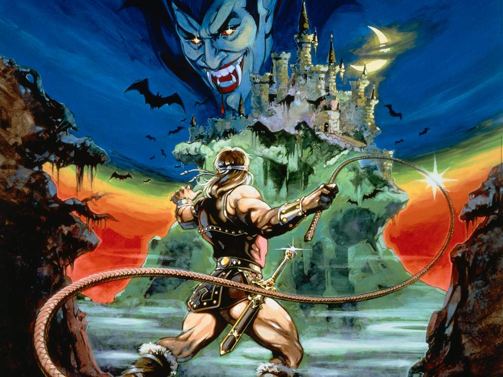

As part of an exam for an exam in 2017, we had to create an hlsl DirectX geometry shader that had some unique feature to it, so nothing generic like a water or grass shader. I ended going for a voxelization shader that implemented some of DirectX 11 unique new stages, namely the
